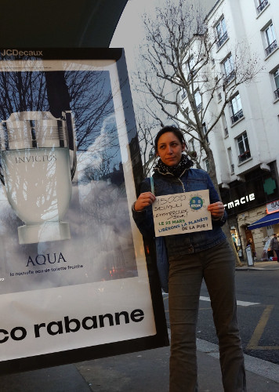
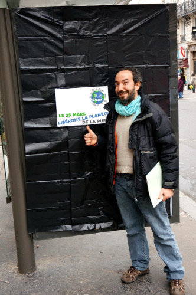

| |
Site dédié à la publication d'informations communiquées par le Collectif des déboulonneurs. En aucun cas ce site n'appelle à des actions illégales. | |
 |
||
|
Accueil du site > Paris > Le 25 mars libérons la planète de la pub !
Cette année encore, libérons, ne serait-ce que le temps d’une journée, la planète de la publicité ! Après la première journée de mondialisation des luttes contre la publicité le 25 mars 2015, lancée avec l’Appel de Tunis par des centaines d’activistes des 5 continents au Forum Social Mondial, l’association française Résistance à l’Agression Publicitaire se met au service de ses alliés et des militants du monde pour poursuivre et accroitre la dynamique. Lisez l’Appel du 25 mars 2016 et rejoignez la mobilisation. La publicité est partout ! Mobilisons nous partout où elle se trouve. Localement, individuellement, collectivement, en pointant les publicités qui vous énervent, ainsi qu’avec des actions directes, non violentes. Rejoignez-nous sur le site de campagne journee.contrelapub.org et ensemble, le 25 mars prochain, montrons au monde notre mobilisation commune ! Objectif général Organisation d’actions de lutte contre la publicité dans un grand nombre de pays, et mise en visibilité d’un mouvement international. Moyens d’action 1- Vous pouvez télécharger, imprimer notre visuel commun et y écrire votre message qui dépote. 2- Vous prendre en photo devant la pub qui vous énerve le plus (avant ou le jour du 25 mars). Avant le 25 mars montrez votre mécontentement ! 
Le jour du 25 mars agissez et montrez que vous êtes content ! 
3- Et envoyez-le nous et diffusez-le dans vos réseaux ! Adresse de contact : mondialisons[a]antipub.org Pour aller plus loin, consultez le guide méthodologique de mobilisation. Vous y trouverez aussi des exemples d’actions à réaliser. Vous voulez mettre en visibilité un rdv d’action collective le 25 mars ? Inscrivez-vous ! Plus d’infos sur nos sites internet : Français |
|
Site utilisant SPIP - Hébergement Ouvaton
|